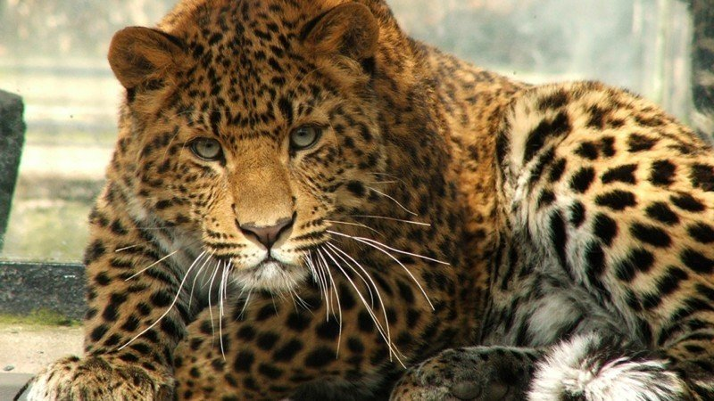
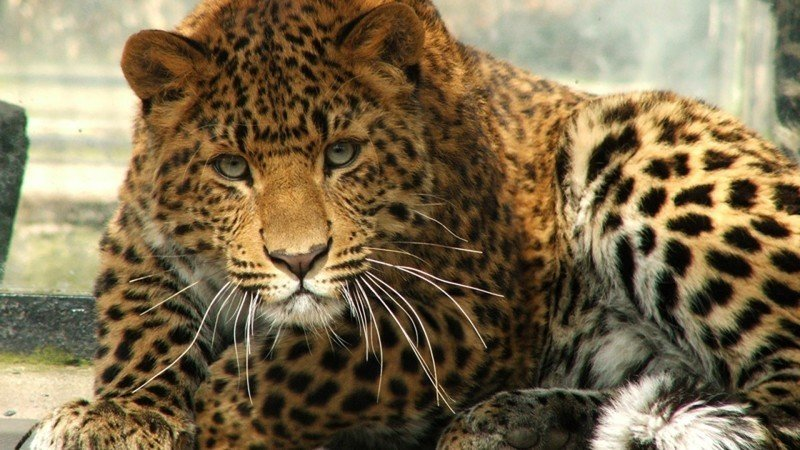

It is estimated that becasue of human activities, current sepcies extinction rates are around 1000 times than they otherwise would be. According to the IUCN, out of all speacies over 27,000 are at risk and should be under conservation. Of these 25% are mammals , 14% are birds and 40% are amphibians. However becasue not all species have been assesed these numbers could be even higher. A 2019 UN report assesing global Bio-diversity extrapolated IUCN data to all species and estimated that 1 million species worldwide could face extinction.
 

Overexplotiation is the practice of harvesting of plants and animals at a rate that is faster thanthe species ability to recover, this is most evident in fish populations worldwide as due to overexplotation the decline in fish sizes and population numbers has been quite dramatic. Poaching is again another major threat to certain species especially endangered species whose value on blackmarkets is increased becasue there are so few of those species of plants and animals. Without a huge investment in anti poching infostrucure these species will continue to decline at a very alarming rate.
With an increase in the Human population worldwide this has led to a very high number of people that are encroaching into wild areas that has lead to mass hunting and poaching. The illegal wildlife trade has been devastating to the populations of rhinos and elephants, with most recently the Northern white rhinocerous going officially extinct in 2018 after the last surviving male died leaving 2 females who are unable to give birth as the last remaining Northern white rhinocerous. Thriving black markets where everything from tiger bones and pelts to exoctic reptiles are comman place worldwide. Despite concerted efforts the illegal wildlife trade has escalated dramatically over the last decade. Human population growth, increasing wealth and access to wildlife and improved global trasport links have all played a part.